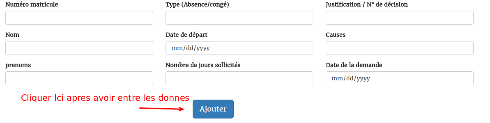
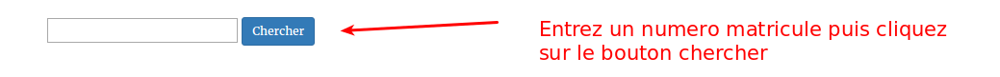
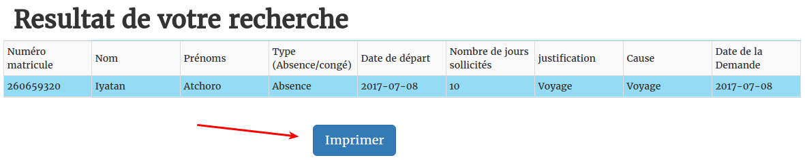
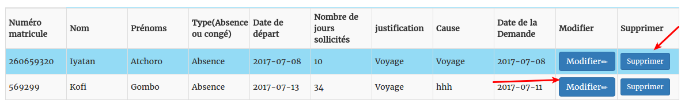
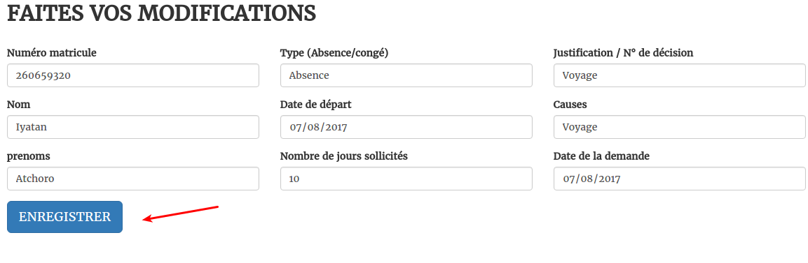

A la page d'accueil vous trouverai ces deux options. cliquez sur la deuxieme si vous voulez savoir comment utiliser cette platform

Pour ajouter des donnes, remplissez le formulaire puis cliquer sur "Ajouter"

Les resultats de la recherche s'afficherons puis vous pouvez les imprimer


A la page d'acceuil vous trouverai les resultats un tableau avec les donnes d'utilisateur. Vous pouvez modifier ou supprimer

A la page de modification vous pourrai faire vos modifications puis appuyer sur enregistrer pour sauvegarder